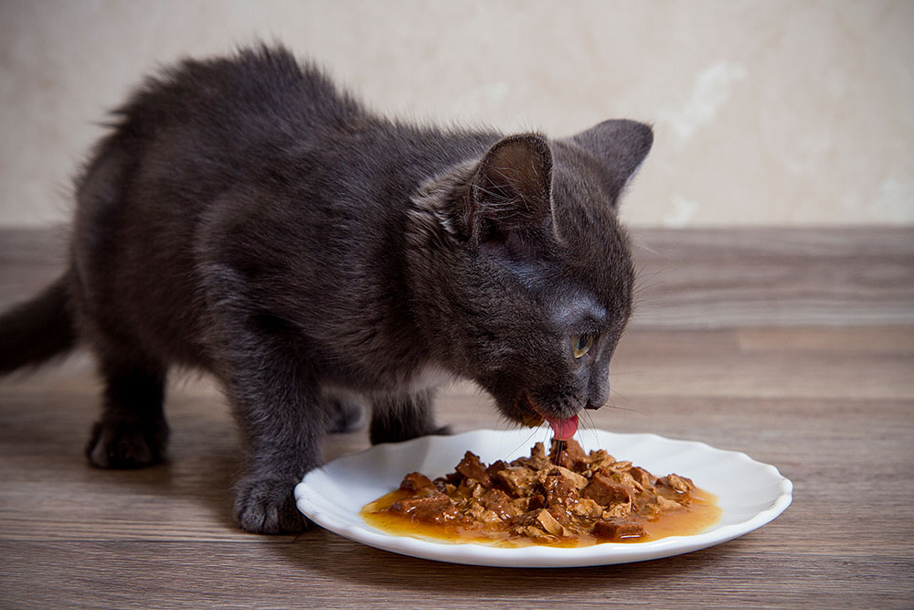
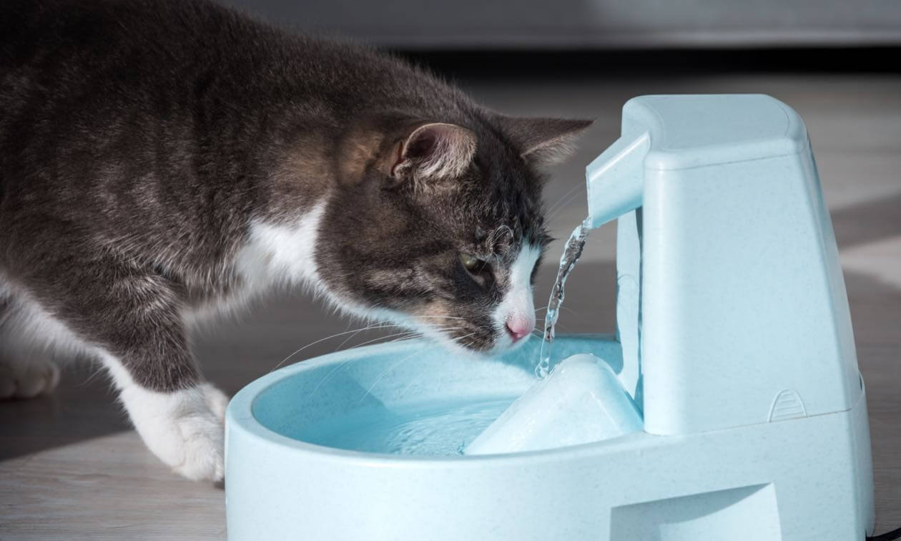
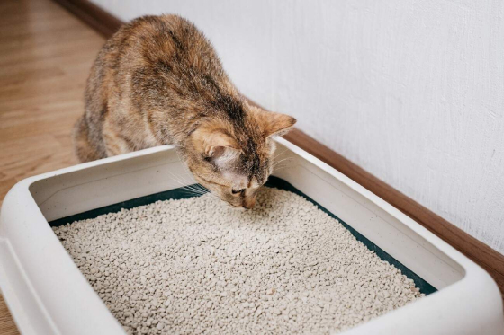
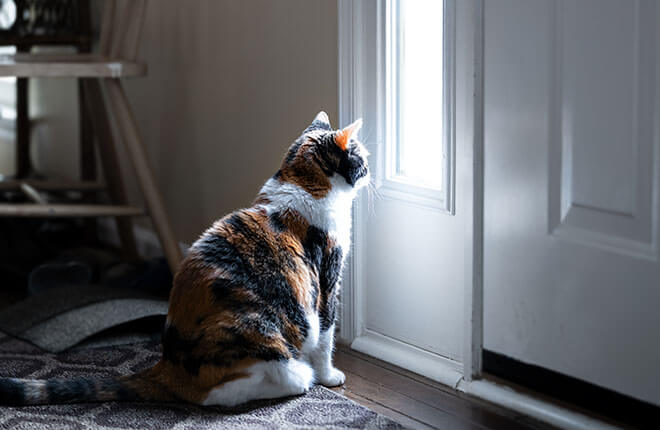

Taking care of a cat involves more than just feeding and cuddling. Here are some essential tips to ensure your feline friend stays happy and healthy.
1. Provide a Balanced Diet

Cats are obligate carnivores, which means they need a diet rich in animal protein. Feed your cat high-quality commercial cat food that meets their nutritional needs. Avoid giving them dog food or human food, as these can lack essential nutrients.
Tip: Wet food can help keep your cat hydrated, but dry food is good for dental health. A mix of both is ideal.
2. Ensure Fresh Water

Always provide fresh, clean water for your cat. Some cats prefer running water, so consider getting a cat water fountain to encourage them to drink more.
Tip: Place water bowls away from food bowls, as cats prefer their water source to be separate.
3. Regular Vet Checkups
Take your cat to the vet at least once a year for a checkup. Regular visits help detect health issues early and ensure your cat is up-to-date on vaccinations.
Tip: Keep a record of your cat's vaccinations and medical history for easy reference.
4. Keep the Litter Box Clean

Cats are very clean animals and prefer a clean litter box. Scoop the litter box daily and change the litter regularly to keep your cat happy and prevent accidents.
Tip: Use unscented litter, as some cats are sensitive to strong smells.
5. Provide Enrichment and Playtime
Cats need mental and physical stimulation. Provide toys, scratching posts, and interactive play sessions to keep your cat entertained and prevent boredom.
Tip: Rotate toys regularly to keep your cat interested.
6. Groom Your Cat Regularly
Brush your cat's fur regularly to prevent matting and reduce shedding. Long-haired cats may need daily brushing, while short-haired cats can be brushed once a week.
Tip: Use a brush suitable for your cat's fur type to avoid discomfort.
7. Create a Safe Environment

Ensure your home is safe for your cat. Keep toxic plants, chemicals, and small objects out of reach. Provide cozy spots for your cat to rest and hide.
Tip: Use cat-proof locks on cabinets containing harmful substances.